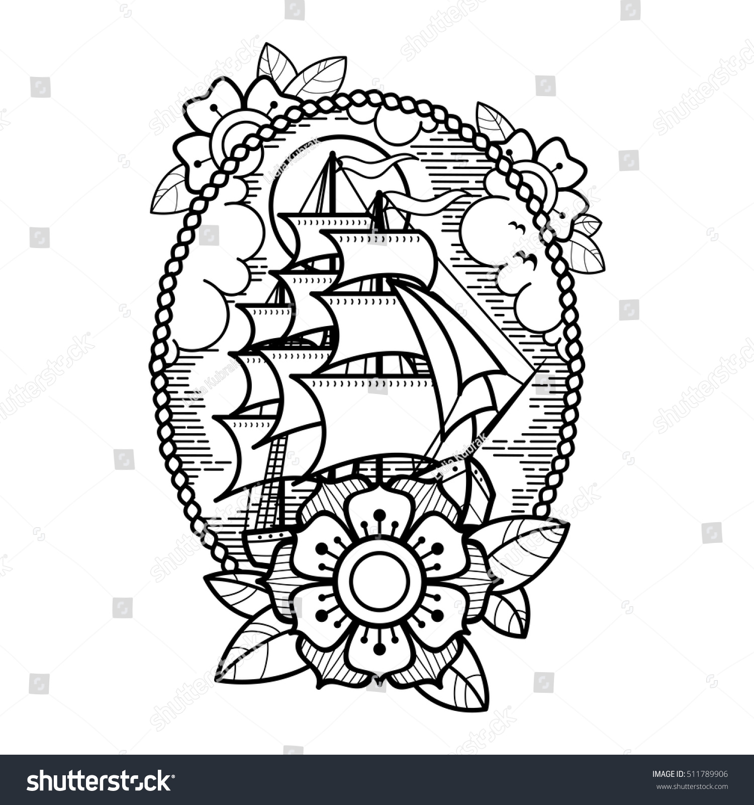
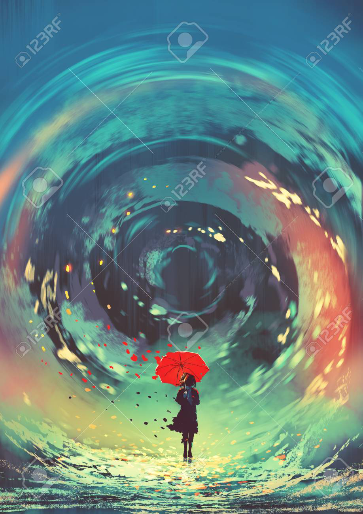

Devaintart is home to all sorts of artwork. You'llbe amazing by the beautiful pieces in so many different styles. Here a few examples below.
 This is an example of traditional art. Traditional art is made from pencils, colored pencils & paper. These can be uploaded into deviant art by taking pictures.
 Digital Art is more varaied than Traditional art; meaning it can be made in mutiple other media sites. Artwork made in Photoshop, Media Bang & Illustratorcan be uploaded into DevianArt.